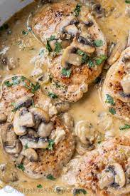

Mushroom Pork Chops

Description
Pork chops with cream of mushroom soup are quick and easy, but very delicious.
Ingredients
4 pork chops
salt and ground black pepper to taste
1 pinch garlic salt, or to taste
½ pound fresh mushrooms, sliced
1 onion, chopped
1 (10.75 ounce) can condensed cream of mushroom soup
Steps
Season pork chops with salt, pepper, and garlic salt.
Brown chops over medium-high heat in a large nonstick skillet. Add mushrooms and onion and sauté for one minute.
Pour soup over chops. Cover, reduce the heat to medium-low, and simmer until chops are cooked through, 20 to 30 minutes.
Return